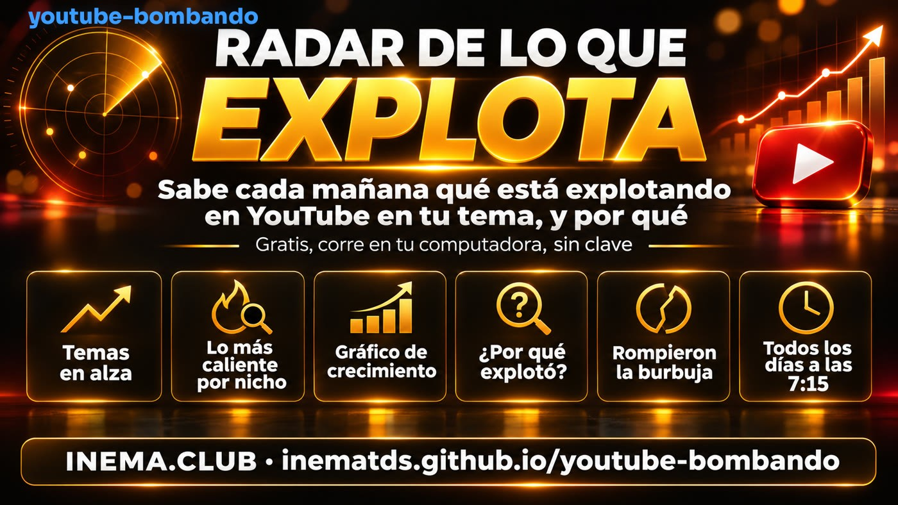

youtube-bombando · proyecto gratis · corre en tu computadora · sin clave
Radar de lo que explota: descubre cada mañana qué está explotando en YouTube en tu tema, y por qué
Grabas, te esmeras, y el video no se mueve. Mientras tanto, un canal pequeño del mismo tema hace cientos de veces lo normal para él. El radar de lo que explota te muestra, antes de grabar, qué está creciendo y si creció por el tema (puedes aprovechar la idea) o solo porque el canal es grande (no sirve).
youtube-bombando es un pequeño sistema que corre solo en tu computadora, cada mañana. Busca en YouTube los videos de la semana en los temas que elijas, anota las vistas de cada uno durante 7 días y arma un panel con lo que está creciendo más rápido. Para cada video, compara las vistas con lo normal del propio canal y dice si la señal es de contenido, de quién publica (canal grande) o de quién habla (invitado). Es para quien graba videos o quiere empezar un canal. Solo necesita Python y una herramienta gratis que lee YouTube; no usa clave ni API de pago.

El panel
Lo que ves cada mañana
A las 07:15 termina la recolección y el panel se actualiza solo. Eliges el tema arriba y el orden de los videos; cada opción de orden viene explicada debajo del selector.
Temas en alza. Las palabras que más aparecen en los títulos de los videos que más crecen. La barra muestra el peso (vistas por hora sumadas).Lo más caliente de cada tema. Miniatura, vistas, edad (tiempo desde la publicación), vistas por hora, cuánto superó lo normal del canal y el gráfico de crecimiento.Gráfico de crecimiento. Vistas (vertical) por horas desde la publicación (horizontal). La línea punteada va de la publicación a la 1.ª medición; la línea continua une las mediciones diarias.Todos los videos. Haz clic en “ver gráfico” en cualquier fila para abrir el crecimiento de ese video.
Ordenar por
Qué significa
Nota
Lo más caliente ahora: cuánto crece el video más rápido que los otros del mismo tema, sumado a cuánto superó el tamaño del canal.
Velocidad
Vistas por hora desde la publicación. Favorece a los videos nuevos.
Ganancia en 24 h
Vistas ganadas desde la medición del día anterior (aparece a partir del 2.º día de recolección).
Multiplicador
Vistas ÷ suscriptores. Por encima de 1× el video llegó a más gente de la que el canal tiene suscrita.
× canal
Vistas ÷ lo normal de los últimos videos del propio canal. 3× o más = rompió la burbuja del canal.
Vistas
Total de vistas, sin mirar edad ni tamaño del canal.
Más nuevos
Los publicados hace menos tiempo primero.
¿Por qué explotó?
¿Fue el tema, el canal o quién habla?
Un video con 1 millón de vistas en un canal de 5 millones de suscriptores no enseña nada: la audiencia ya estaba ahí. El mismo millón en un canal de 7 mil suscriptores enseña mucho. Por eso el panel compara cada video con lo normal del propio canal (la mediana de sus últimos videos).
🟨 Contenido
Hizo 3 veces o más lo normal del canal. El tema tiró. Es la idea que vale la pena estudiar y hacer a tu manera.
🏢 Quién publica (el canal)
Canal grande (más de 500 mil suscriptores) a su ritmo de siempre. La audiencia ya existía; copiar el tema no trae el mismo resultado.
🎙️ Quién habla (el invitado)
Tiene invitado (entrevista, pódcast, charla o nombre conocido) y superó 1,5× lo normal. La persona tiró.
Es una señal, no una prueba de causa: son cuentas simples (vistas ÷ lo normal del canal), sin IA. Cuando el canal todavía no tiene línea de base, el video queda en “Sin datos”, nunca a ojo.
El hallazgo de la 1.ª recolección (12/11/2026)
En general, el contenido manda
320 videos en 7 temas (inteligencia artificial, n8n, claude code, agentes de IA, vibe coding, ganar dinero con IA, chatgpt).
56%
de las vistas vinieron de videos que hicieron 3× o más lo normal del propio canal.
23%
de las vistas fueron de canales grandes a su ritmo normal (quién publica). En el tema “inteligencia artificial”, 31%.
810×
el mayor salto del día: un canal pequeño hizo 810 veces lo normal para él. Un curso de 5 horas en un canal de ~7 mil suscriptores hizo 513×.
Estos números cambian todos los días; el panel muestra los de hoy.
Cómo usar la idea
Del panel a tu próximo video
1
Mira “Rompieron la burbuja” (“Furaram a bolha”: el panel está en portugués)Son canales pequeños y medianos que hicieron mucho más que lo normal. Su tema y su formato son los mejores modelos para estudiar.
2
Revisa los temas en alza de tu nichoFiltra por tu tema. Las palabras que aparecen en varios títulos que crecen rápido indican un tema caliente esta semana.
3
Ignora el “quién publica”Un video de canal grande a su ritmo normal muestra la fuerza del canal, no del tema. No es referencia para ti.
4
Sigue el gráfico durante algunos díasA partir del 2.º día aparecen la ganancia en 24 h y la curva real. Un tema que sigue subiendo al 3.er día todavía tiene espacio.
5
Cambia los temas a tu nichoRecetas, finanzas, pesca, maquillaje: basta con cambiar la lista de temas. cómo usarlo ↓
Parte técnica
El kit: para quien quiere correr el radar
De aquí para abajo está la parte técnica: instalar, elegir los temas y dejarlo corriendo todos los días. No necesitas esta parte para entender lo de arriba.
Qué es
Un radar diario, sin clave y sin API
🔎 Recolección
Usa yt-dlp (herramienta abierta y gratis) para buscar los videos de la semana de cada tema y leer las vistas, como lo haría un navegador. Pausa entre llamadas y tope por ronda.
📈 Métricas
Una foto por video por día en una base SQLite local: velocidad, ganancia en 24 h, multiplicador, × canal y la nota. Todo explicado en el README.
🖥️ Panel
Un único index.html que se abre en cualquier navegador, servido en el puerto 8795. También puede aparecer dentro de otro panel (INEMA lo muestra en una tarjeta “Tendencias de red”).
Cómo funciona
Todos los días a las 07:15
Búsqueda de la semana por tema→Vistas de cada video (1 foto/día)→Lo normal de cada canal→Métricas + por qué explotó→Panel
Cada video se sigue durante 7 días desde que fue encontrado. La línea de base de cada canal (últimos 20 videos) se guarda 7 días. La primera recolección completa tardó unos 20 minutos.
Requisitos previos
Python 3 y yt-dlp
Ninguna clave, ningún paquete de Python extra. El horario automático usa el systemd de Linux; en Mac y Windows corres la recolección a mano (o con el programador de tareas del sistema).
🐍 Python 3.9+
python3 --version
📥 yt-dlp
Instálalo y mantenlo actualizado (YouTube cambia y yt-dlp lo acompaña).
# Ubuntu/Debian recientessudo apt install pipx && pipx install yt-dlppipx ensurepath# luego cierra y abre de nuevo la terminal# otros sistemaspython3 -m pip install -U yt-dlpyt-dlp --version
# ¿sin git? sudo apt install gitgit clone https://github.com/inematds/youtube-bombandocd youtube-bombando# ¿descargaste el ZIP? la carpeta es youtube-bombando-main
Guía de uso · paso a paso
Paso a paso
1
Prueba sin internet
Las pruebas y una ronda con datos de ejemplo, sin tocar YouTube. El panel de prueba va a dados/teste/painel/. El final esperado es rodada ok: 7 nichos, 3 novos, 2 fotos, 1 erros: ese 1 error es a propósito (un video privado de ejemplo).
python3 -m unittest discover -s testspython3 bombando/rodada.py --fixtures tests/fixtures# abre dados/teste/painel/index.html en el navegador
2
Elige tus temas
Edita config.json. Cada tema tiene un nombre, el término de búsqueda y si está activo. La lista "nichos" ya trae 7 temas de IA: cámbialos por los tuyos o pon "ativo": false en los que no quieras. Coma entre los ítems, ninguna después del último; el resto del archivo queda igual.
El panel es un solo archivo. Ábrelo directo o sírvelo en el puerto 8795. Sin servidor: abre painel/index.html con doble clic. Queda vacío hasta que termine la primera recolección.
Instala el horario de las 07:15 y el servidor del panel como servicios de tu usuario. Puedes repetirlo sin problema. La computadora tiene que estar encendida y con tu sesión abierta; si estaba apagada a las 07:15, la recolección corre en cuanto la enciendas y entres. El panel se ve desde los otros aparatos de tu red de casa (puerto 8795).